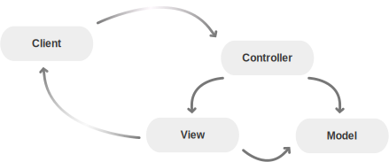
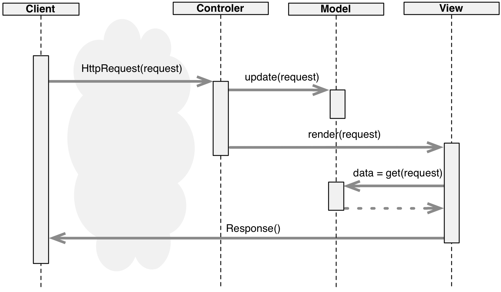
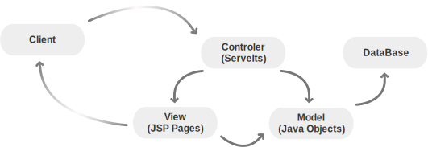
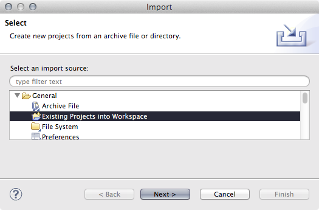
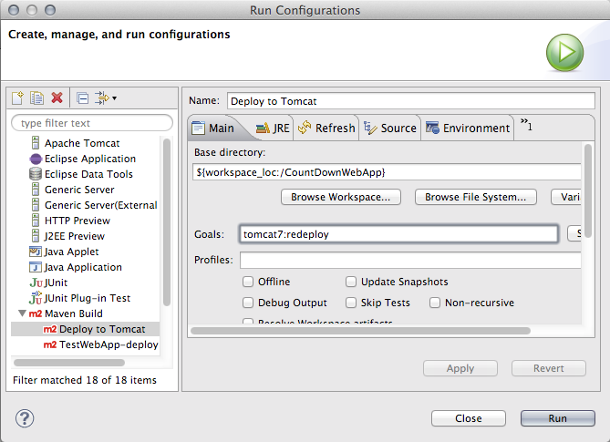
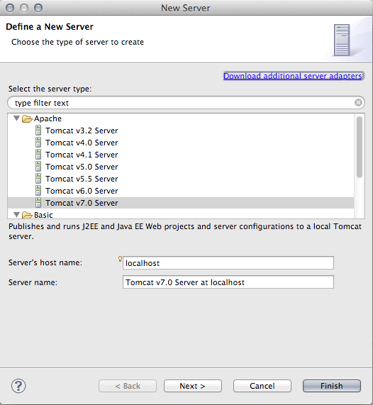
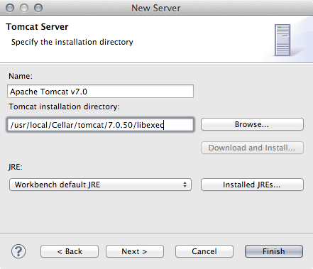
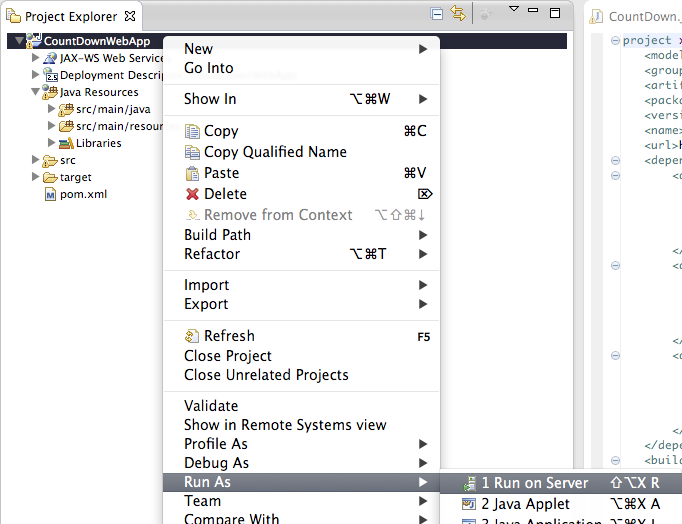

Le Havre University
Yoann Pigné
2014
The Model View Controller is the default and acknowledged design pattern for Web Applications.
Sequence Diagram of a request within the MVC pattern.

Java EE entities in a typical Web App (client/server) request.
javax.servlet.http.HttpServlet abstract class.HttpServletRequest and HttpServletResponse)GET, POST, PUT, DELETE, ...)doGet, if the servlet supports HTTP GET requestsdoPost, for HTTP POST requestsdoPut, for HTTP PUT requestsdoDelete, for HTTP DELETE requestsinit and destroy, to manage resources that are held for the life of the servletgetServletInfo, which the servlet uses to provide information about itselfservice : receives HTTP requests and dispatches them to the doXXX methods. Should not be overridden. import javax.servlet.ServletException;
import javax.servlet.http.HttpServlet;
import javax.servlet.http.HttpServletRequest;
import javax.servlet.http.HttpServletResponse;
public class TestServlet extends HttpServlet {
@Override
public void doGet( HttpServletRequest request, HttpServletResponse response )
throws ServletException, IOException {
// Do something with 'request' and 'response'
}
}JavaServer Pages Standard Tag Library (JSTL)<%@ page pageEncoding="UTF-8" %>
<!DOCTYPE html>
<html>
<head>
<meta charset="utf-8" />
<title>Test</title>
</head>
<body>
<p>Je suis une page générée dynamiquement avec JSP, et je sais compter jusqu'à <%=2+3%> !</p>
</body>
</html>/*
* Generated by the Jasper component of Apache Tomcat
* Version: Apache Tomcat/7.0.47
* Generated at: 2013-12-09 21:02:40 UTC
* Note: The last modified time of this file was set to
* the last modified time of the source file after
* generation to assist with modification tracking.
*/
package org.apache.jsp;
import javax.servlet.*;
import javax.servlet.http.*;
import javax.servlet.jsp.*;
public final class test_jsp extends org.apache.jasper.runtime.HttpJspBase
implements org.apache.jasper.runtime.JspSourceDependent {
private static final javax.servlet.jsp.JspFactory _jspxFactory =
javax.servlet.jsp.JspFactory.getDefaultFactory();
private static java.util.Map<java.lang.String,java.lang.Long> _jspx_dependants;
private javax.el.ExpressionFactory _el_expressionfactory;
private org.apache.tomcat.InstanceManager _jsp_instancemanager;
public java.util.Map<java.lang.String,java.lang.Long> getDependants() {
return _jspx_dependants;
}
public void _jspInit() {
_el_expressionfactory = _jspxFactory.getJspApplicationContext(getServletConfig().getServletContext()).getExpressionFactory();
_jsp_instancemanager = org.apache.jasper.runtime.InstanceManagerFactory.getInstanceManager(getServletConfig());
}
public void _jspDestroy() {
}
public void _jspService(final javax.servlet.http.HttpServletRequest request, final javax.servlet.http.HttpServletResponse response)
throws java.io.IOException, javax.servlet.ServletException {
final javax.servlet.jsp.PageContext pageContext;
javax.servlet.http.HttpSession session = null;
final javax.servlet.ServletContext application;
final javax.servlet.ServletConfig config;
javax.servlet.jsp.JspWriter out = null;
final java.lang.Object page = this;
javax.servlet.jsp.JspWriter _jspx_out = null;
javax.servlet.jsp.PageContext _jspx_page_context = null;
try {
response.setContentType("text/html;charset=UTF-8");
pageContext = _jspxFactory.getPageContext(this, request, response,
null, true, 8192, true);
_jspx_page_context = pageContext;
application = pageContext.getServletContext();
config = pageContext.getServletConfig();
session = pageContext.getSession();
out = pageContext.getOut();
_jspx_out = out;
out.write("\n");
out.write("<!DOCTYPE html>\n");
out.write("<html>\n");
out.write(" <head>\n");
out.write(" <meta charset=\"utf-8\" />\n");
out.write(" <title>Test</title>\n");
out.write(" </head>\n");
out.write("\n");
out.write(" <body>\n");
out.write(" <p>Je suis une page générée dynamiquement avec JSP, et je sais compter jusqu'à ");
out.print(2+3);
out.write(" !</p>\n");
out.write(" </body>\n");
out.write("</html>");
} catch (java.lang.Throwable t) {
if (!(t instanceof javax.servlet.jsp.SkipPageException)){
out = _jspx_out;
if (out != null && out.getBufferSize() != 0)
try { out.clearBuffer(); } catch (java.io.IOException e) {}
if (_jspx_page_context != null) _jspx_page_context.handlePageException(t);
else throw new ServletException(t);
}
} finally {
_jspxFactory.releasePageContext(_jspx_page_context);
}
}
}<!DOCTYPE html>
<html>
<head>
<meta charset="utf-8" />
<title>Test</title>
</head>
<body>
<p>Je suis une page générée dynamiquement avec JSP, et je sais compter jusqu'à 5 !</p>
</body>
</html>Standard format for deploying an application to an application server.
MyApp/
├── WEB-INF/
│ ├── *.jsp
│ ├── classes/
│ │ └── *.class
│ ├── lib/
│ │ └── *.jar
│ └── web.xml
├── *.html
├── *.css
├── *.png
└── *.jsWEB-INF/ folder are public resources (html, css, js). Inside WEB-INF, files are not publicly accessibleweb.xml is the entry point of the application. Contains routing information.classes/ folder contains compiled Java objects of the applicationlib/ folder contains external libraries needed by the application.Install on Ubuntu.
sudo apt-get install maven
Create a Web App with the webapp artifact.
mvn archetype:generate -DarchetypeArtifactId=maven-archetype-webapp
3 parameters are asked :
<groupId>org.pigne</groupId>
<artifactId>CountDownWebApp</artifactId>
<version>0.0.1</version>
Add a missing folder (for proper use with Eclipse later on)
mkdir CountDownWebApp/src/main/java
cd CountDownWebAppWe get a different structure that a normal WAR.
CountDownWebApp
├── pom.xml
└── src
└── main
├── resources
└── webapp
├── WEB-INF
│ └── web.xml
└── index.jsp
pom.xml file<project xmlns="http://maven.apache.org/POM/4.0.0" xmlns:xsi="http://www.w3.org/2001/XMLSchema-instance"
xsi:schemaLocation="http://maven.apache.org/POM/4.0.0 http://maven.apache.org/maven-v4_0_0.xsd">
<modelVersion>4.0.0</modelVersion>
<groupId>org.pigne</groupId>
<artifactId>CountDownWebApp</artifactId>
<packaging>war</packaging>
<version>0.0.1</version>
<name>CountDownWebApp Maven Webapp</name>
<url>http://maven.apache.org</url>
<dependencies>
<dependency>
<groupId>junit</groupId>
<artifactId>junit</artifactId>
<version>3.8.1</version>
<scope>test</scope>
</dependency>
</dependencies>
<build>
<finalName>CountDownWebApp</finalName>
</build>
</project>
We add a the this compiler to the list of plugins, in the build section of the pom.xml file.
<build>
<finalName>CountDownWebApp</finalName>
<plugins>
<plugin>
<groupId>org.apache.maven.plugins</groupId>
<artifactId>maven-compiler-plugin</artifactId>
<version>3.0</version>
<configuration>
<source>${jdk.version}</source>
<target>${jdk.version}</target>
</configuration>
</plugin>
</plugins>
</build>
<dependency>
<groupId>javax.servlet</groupId>
<artifactId>servlet-api</artifactId>
<version>2.5</version>
<scope>provided</scope>
</dependency><dependency>
<groupId>javax.servlet.jsp</groupId>
<artifactId>jsp-api</artifactId>
<version>2.1</version>
<scope>provided</scope>
</dependency>
Note the <scope>provided</scope> property the tells maven not to package those dependencies with the WAR file. Servlets and JSP are already part of the destination Application Server.
An Lightweight Application Server and Web Server.
Not a complete Java EE platform.
Installation for Ubuntu
sudo apt-get install tomcat7 tomcat-adminConfigure authorizations. In file /somewhere/on/the/machine/tomcat-users.xml:
<tomcat-users>
<role rolename="manager-gui"/>
<role rolename="manager-script"/>
<user password="123soleil" roles="manager-gui,manager-script" username="tomcat"/>
</tomcat-users>Restart the server (Ubuntu)
sudo /etc/init.d/tomcat7 restartAdd and configure a plugin to the build configuration of the project in the pom.xml file.
<build>
<finalName>CountDownWebApp</finalName>
<pluginManagement>
<plugins>
<plugin>
<groupId>org.apache.tomcat.maven</groupId>
<artifactId>tomcat7-maven-plugin</artifactId>
<configuration>
<path>/${project.build.finalName}</path>
<update>true</update>
<url>http://localhost:8080/manager/text</url>
<username>tomcat</username>
<password>123soleil</password>
</configuration>
</plugin>
</plugins>
</pluginManagement>
</build>mvn tomcat7:redeploy[INFO] tomcatManager status code:200, ReasonPhrase:OK
[INFO] OK - Undeployed application at context path /CountDownWebApp
[INFO] OK - Deployed application at context path /CountDownWebApp
[INFO] ------------------------------------------------------------------------
[INFO] BUILD SUCCESS
[INFO] ------------------------------------------------------------------------
[INFO] Total time: 4.884s
[INFO] Finished at: Mon Dec 09 23:59:11 CET 2013
[INFO] Final Memory: 13M/33M
[INFO] ------------------------------------------------------------------------
Let's enjoy our first Web App : http://localhost:8080/CountDownWebApp/
In the src/main/java/ folder, under the package names you have : src/main/java/org/pigne/CountDown.java
package org.pigne;
import java.io.IOException;
import java.io.PrintWriter;
import java.text.ParseException;
import java.text.SimpleDateFormat;
import java.util.Date;
import javax.servlet.ServletException;
import javax.servlet.http.HttpServlet;
import javax.servlet.http.HttpServletRequest;
import javax.servlet.http.HttpServletResponse;
public class CountDown extends HttpServlet {
@Override
protected void doGet(HttpServletRequest req, HttpServletResponse resp)
throws ServletException, IOException {
resp.setContentType("text/html");
resp.setCharacterEncoding("UTF-8");
PrintWriter out = resp.getWriter();
out.println("<!DOCTYPE html>");
out.println("<html>");
out.println("<head>");
out.println("<meta charset=\"utf-8\" />");
out.println("<title>CountDown</title>");
out.println("</head>");
out.println("<body>");
out.println("<p>"+diff()+"</p>");
out.println("</body>");
out.println("</html>");
}
private String diff(){
String theDate = "10/12/2013 12:30:00";
String pattern = "dd/MM/yyyy HH:mm:ss";
Date d2 = null;
try {
d2 = new SimpleDateFormat(pattern).parse(theDate);
} catch (ParseException e) {
return "server error...";
}
Date d1 = new Date();
long diff = d2.getTime() - d1.getTime();
long diffSeconds = diff / 1000 % 60;
long diffMinutes = diff / (60 * 1000) % 60;
long diffHours = diff / (60 * 60 * 1000) % 24;
long diffDays = diff / (24 * 60 * 60 * 1000);
return diffDays+" jour(s) "+diffHours+" heure(s) "+diffMinutes+" minute(s) "+diffSeconds+" seconde(s)";
}
}The main file in the project is web.xml in src/main/webapp/WEB-INF/:
<web-app>
<servlet>
<servlet-name>CountDown</servlet-name>
<servlet-class>org.pigne.CountDown</servlet-class>
</servlet>
<servlet-mapping>
<servlet-name>CountDown</servlet-name>
<url-pattern>/countdown</url-pattern>
</servlet-mapping>
</web-app>Compile / Deploy / Test : http://localhost:8080/CountDownWebApp/countdown
We don't want to write HTML code in the java Servlet to code : separation of concerns
First we create a simple JSP in the public folder : src/main/webapp/CountDownView.jsp
<%@ page pageEncoding="UTF-8" %>
<!DOCTYPE html>
<html>
<head>
<meta charset="utf-8" />
<title>CountDown</title>
</head>
<body>
<p>Je suis une page générée dynamiquement avec JSP, mais je ne peux pas vous donner l'heure...</p>
</body>
</html>Test this JSP's automaticaly generated Servlet : http://localhost:8080/CountDownWebApp/CountDownView.jsp
Check the Generated java code in the work folder of the Tomcat App server.
Hide the JSP behind the WEB-INF folder.
mv src/main/webapp/CountDownView.jsp src/main/webapp/WEB-INFModify the servlet
@Override
public void doGet( HttpServletRequest request, HttpServletResponse response )
throws ServletException, IOException {
this.getServletContext().getRequestDispatcher( "/WEB-INF/CountDownView.jsp" ).forward( request, response );
}Compile / Deploy / Test : http://localhost:8080/CountDownWebApp/countdown
Modify the Servlet
@Override
public void doGet( HttpServletRequest request, HttpServletResponse response )
throws ServletException, IOException {
String diff = diff();
request.setAttribute( "diff", diff );
this.getServletContext().getRequestDispatcher( "/WEB-INF/CountDownView.jsp" ).forward( request, response );
}Modify the JSP
<%@ page pageEncoding="UTF-8" %>
<!DOCTYPE html>
<html>
<head>
<meta charset="utf-8" />
<title>CountDown</title>
<style>
blockquote {
font-style: italic;
padding: 20px;
}
blockquote footer{
color:#555;
font-weight: bold
}
</style>
</head>
<body>
<blockquote>
« Il reste
<%
String diff = (String) request.getAttribute("diff");
out.println( diff );
%>
avant la fin de ce cours ! »
<footer>
<%
String parametre = request.getParameter( "author" );
out.println( parametre );
%>
</footer>
</blockquote>
</body>
</html>Compile / Deploy / Test : http://localhost:8080/CountDownWebApp/countdown
A dedicated version of Eclipse for Java EE.
Integration of Maven and Application Servers (e.g. Tomcat).
mvn eclipse:eclipse -Dwtpversion=2.0File > Import > Existing Projects into Workspace
We create a run configuration to execute the maven target: Run > Run configurations

sudo catalina stop
# or
sudo service tomcat stopWindow > Show View > Servers
Give the libexec folder name of your Tomcat's install directory. Probably /var/lib/tomcat7/.

Now you can run you project. Any modification to the code (upon saving the file) will be compiled and published to Tomcat!
